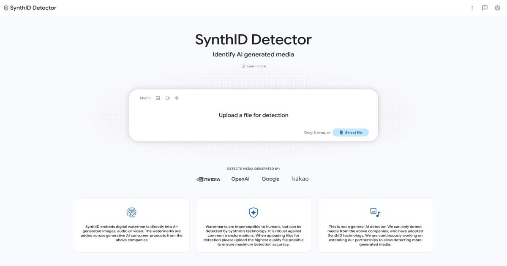

Новый веб-сайт Google SynthID может идентифицировать медиа, сгенерированные ИИ
Google во вторник запустил новый сайт, который позволяет любому проверить, генерируется ли медиафайл, будь то изображение, видео или аудиоклип, с помощью ИИ.

Google во вторник запустил новый сайт, который позволяет любому проверить, генерируется ли медиафайл, будь то изображение, видео или аудиоклип, с помощью ИИ.